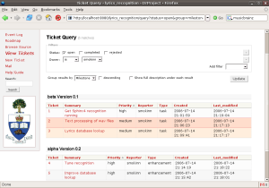
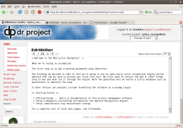
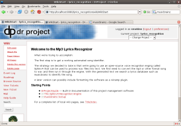
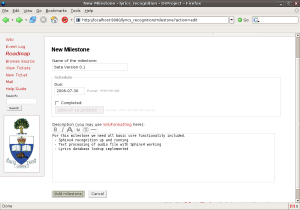
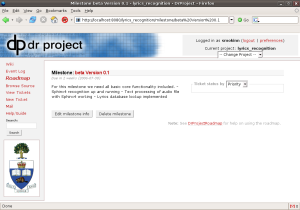
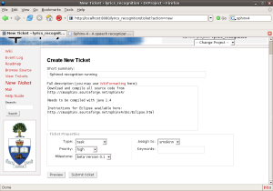
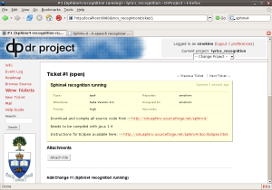
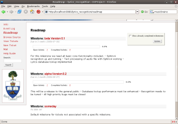

Screenshots of DrProject 1.0
Guillaume Theoret took some screenshots of DrProject on Friday; it’s looking pretty spiffy, if I do say so myself. David Scannell found one late-breaking bug on Thursday, and was too busy helping Tom Dean with the install at Queen’s University to finish testing it on Friday, so the 1.0 Final release has been delayed until Monday. We’re so close… ;-)







